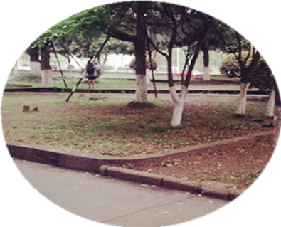

春眠不觉晓，处处啼鸟，夜来风雨声，花落知多少？春天是个绚丽多彩的季节，春光明媚，春风拂面，
春暧花开，春回大地，万物苏醒，百花开放，万紫千红，桃红柳绿，它是诗人和画家笔下的宠儿。
但在四季如春的南方，特别是在喧嚣的都市里是感觉不到春的来临，只是在回南风的潮湿里，你才会醒悟：哦，春天来了！
南方的回潮天气，薄雾笼罩，烟雨潇潇，水气弥漫，路面泥泞，
楼道湿漉，仰望天空，朦胧飘渺，夜色深浓，灯火迷漫。
阴雨绵绵的日子终日难见阳光，阳台的衣服散漫着一股怪味，
房间的窗户不敢轻易打开。
南方的春天是最郁闷最压抑的季节，
潮湿的空气让人周身无力，懒洋洋的想打瞌睡，
时冷时热的天气是流感发生的最敏感诱因，心情也随着灰灰的天空一样沉重。
乍暧还寒时候最难将息，夜里总是睡得不好，清晨起床头脑昏沉沉的，这次第，又怎一个愁字了得？
微风细雨虽然一直持续着，但不知名的花儿却是开满了整个山坡，
一眼望去，姹紫嫣红，争相竟放，风景无限的美。叽叽喳喳的小鸟穿梭于树枝之间，
唤呼同伴一齐亮响它们的嗓子在高歌。街道上粗壮的木棉树上布满了一簇簇的花朵
，形成了一道特殊的风景线。而树下掉了一地的落花则是应了诗人惜春诗句：更能消几番几雨
，匆匆春又归去，惜春长怕花开早，何况落红无数。
如果我们无计留住春天，且让一句“落红不是无情物，化作春泥更护花”来安慰那份心底的失落吧。
